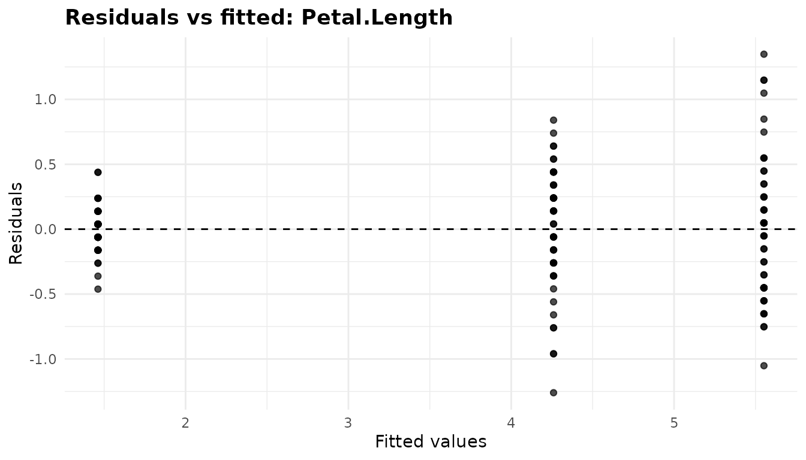
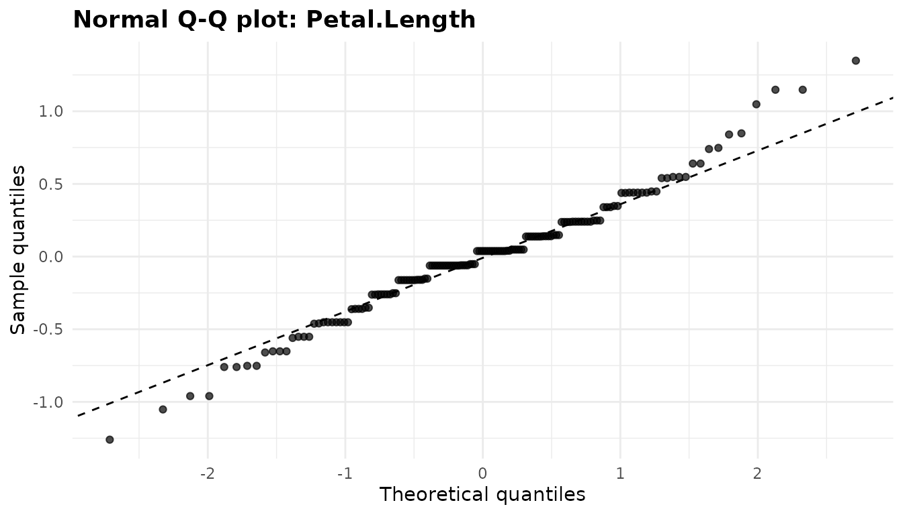
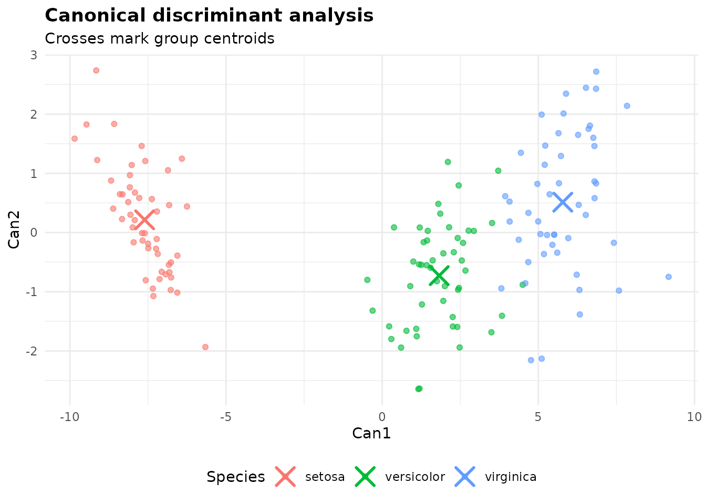
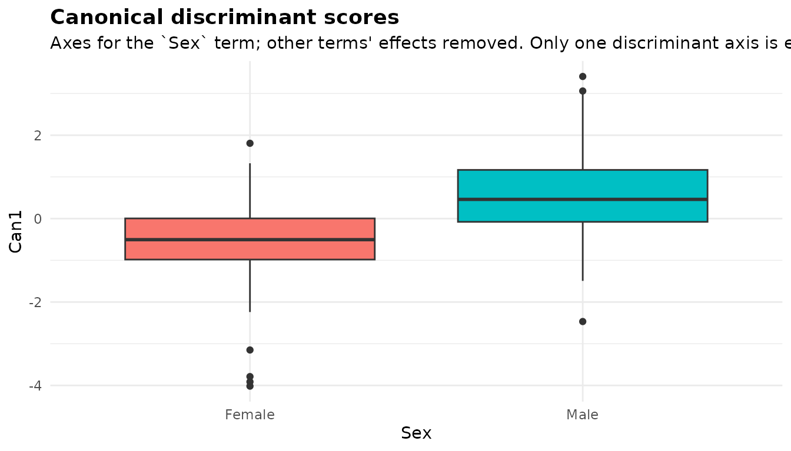
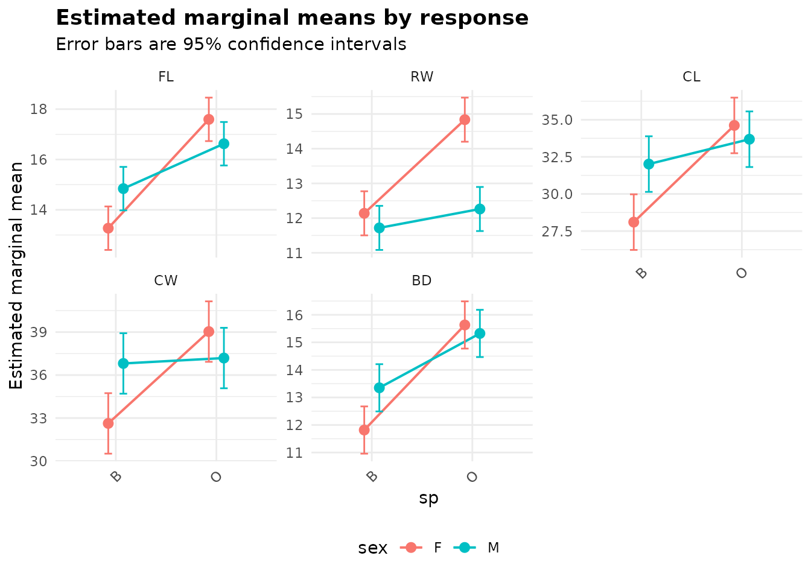
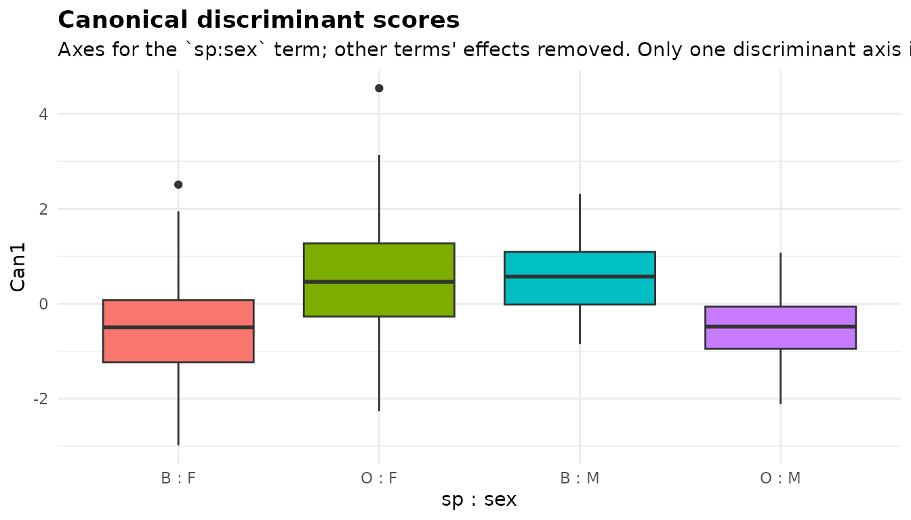

MANOVA: comparing groups on several responses at once
Source:vignettes/articles/manova.Rmd
manova.Rmdanova_manova() compares two or more numeric responses
jointly across groups. It reports a multivariate test of each
term, follows it up with one ANOVA per response, and describes how the
groups separate with a canonical discriminant analysis; with covariates
it becomes a MANCOVA. Use it when you have several related measurements
on each unit and want one test of “do the groups differ on these
measurements taken together”, or want to know which combination of them
separates the groups. For a single response use
anova_glm(), anova_welch() or, with a
covariate, anova_ancova(); for the same response measured
repeatedly on each subject, anova_rm(). The decision guide has more.
The data
datasets::iris gives four measurements, in centimetres,
of 50 flowers from each of three species of iris.
resp <- c("Sepal.Length", "Sepal.Width", "Petal.Length", "Petal.Width")
head(iris)
#> Sepal.Length Sepal.Width Petal.Length Petal.Width Species
#> 1 5.1 3.5 1.4 0.2 setosa
#> 2 4.9 3.0 1.4 0.2 setosa
#> 3 4.7 3.2 1.3 0.2 setosa
#> 4 4.6 3.1 1.5 0.2 setosa
#> 5 5.0 3.6 1.4 0.2 setosa
#> 6 5.4 3.9 1.7 0.4 setosa
table(iris$Species)
#>
#> setosa versicolor virginica
#> 50 50 50
aggregate(. ~ Species, data = iris, FUN = mean)
#> Species Sepal.Length Sepal.Width Petal.Length Petal.Width
#> 1 setosa 5.006 3.428 1.462 0.246
#> 2 versicolor 5.936 2.770 4.260 1.326
#> 3 virginica 6.588 2.974 5.552 2.026The four measurements are strongly correlated with each other (bigger flowers are bigger in every direction), so four separate ANOVAs would test largely the same thing four times. A MANOVA tests them together, taking the correlations into account.
Fitting the model
Responses are named as a character vector, then the grouping variable(s).
fit <- anova_manova(iris, resp, "Species")
fit
#> Multivariate analysis of variance (Pillai test, Type II)
#> --------------------------------------------------------
#> Call: anova_manova(data = iris, responses = resp, groups = "Species")
#> Observations used: 150
#>
#> Omnibus test (Type II, Pillai's trace, approximate F)
#> term df statistic approx_f num_df den_df p_value
#> 1 Species 2 1.192 53.47 8 290 < 2.2e-16
#>
#> Notes
#> - Mardia's tests reject multivariate normality of the residuals. The multivariate table uses Pillai's trace, the most robust of the four statistics to this.
#> - Box's M rejects equality of the group covariance matrices. The test is very sensitive to non-normality, so inspect the group covariances before acting on it. With equal group sizes the multivariate tests are fairly robust to unequal covariances, Pillai's trace most of all (it is the statistic used here).
#>
#> Plots available: residuals_Sepal.Length, qq_Sepal.Length, residuals_Sepal.Width, qq_Sepal.Width, residuals_Petal.Length, qq_Petal.Length, residuals_Petal.Width, qq_Petal.Width, emmeans, canonical
#> (use plot(x, which = "residuals_Sepal.Length"))Reading the printout:
- The method line names the multivariate statistic (Pillai’s trace,
the default
test) and the type of test (Type II, the defaulttype). -
Observations used: 150: no rows were dropped. - The table is the multivariate test, one row per term.
- The notes say that Mardia’s tests reject multivariate normality and that Box’s M rejects equal covariance matrices. Both are discussed below.
- There are two plots per response (residuals and Q-Q), a marginal-means plot and a canonical plot.
summary(fit) adds the assumption checks, the effect
sizes, marginal means and comparisons for every response, the canonical
axes and each response’s univariate ANOVA table.
The multivariate test
fit$multivariate
#> term df statistic approx_f num_df den_df p_value
#> 1 Species 2 1.191899 53.46649 8 290 9.742163e-53
attr(fit$multivariate, "statistic")
#> [1] "Pillai's trace, approximate F"$multivariate (the same table as $anova)
has one row per term:
-
dfis the term’s hypothesis degrees of freedom (a three-level factor has 2). -
statisticis the multivariate statistic, here Pillai’s trace, which lies between 0 and the smaller of the number of responses anddf. -
approx_f,num_dfandden_dfare its F approximation, andp_valuethe p-value from it.
The tests are computed by car::Manova() on the
multivariate linear model
lm(cbind(<responses>) ~ <groups>), kept in
$model. They are Type II by default: each term is adjusted
for every other term that does not contain it, so the result does not
depend on the order of groups. type = "III"
fits under sum-to-zero contrasts and adjusts each term for all others.
With one grouping variable the two agree, and both agree with
summary(stats::manova()), which is sequential and so
order-dependent once there are several terms.
Here the species differ overwhelmingly on the four measurements taken together (Pillai’s trace = 1.192, p far below any threshold).
Which statistic: test
There are four standard multivariate statistics, and
test chooses one: "Pillai" (the default),
"Wilks", "Hotelling-Lawley" or
"Roy". They are all functions of the same eigenvalues and
usually agree, as here:
tests <- c("Pillai", "Wilks", "Hotelling-Lawley", "Roy")
do.call(rbind, lapply(tests, function(t) {
f <- anova_manova(iris, resp, "Species", test = t, plots = FALSE)
data.frame(test = t, f$multivariate[, c("statistic", "approx_f", "num_df",
"den_df", "p_value")])
}))
#> test statistic approx_f num_df den_df p_value
#> 1 Pillai 1.19189883 53.46649 8 290 9.742163e-53
#> 2 Wilks 0.02343863 199.14534 8 288 1.365006e-112
#> 3 Hotelling-Lawley 32.47732024 580.53210 8 286 6.436176e-172
#> 4 Roy 32.19192920 1166.95743 4 145 3.787298e-109They differ in how they behave when the assumptions fail and in which alternatives they detect best. Pillai’s trace is the most robust to unequal covariance matrices and non-normality, which is why it is the default. Roy’s largest root uses only the first eigenvalue: it is the most powerful when the groups differ along a single direction, but with more than one hypothesis degree of freedom its F statistic is only an upper bound, so its p-value is a lower bound, and a note says so:
roy <- anova_manova(iris, resp, "Species", test = "Roy", plots = FALSE)
roy$notes
#> [1] "For `Species`, Roy's largest root has only an upper bound for its F statistic (the hypothesis has more than one degree of freedom and there are 4 responses), so the reported p-value is a lower bound: it is anti-conservative. Pillai's trace or Wilks' lambda give calibrated p-values."
#> [2] "Mardia's tests reject multivariate normality of the residuals. Pillai's trace is the most robust of the four multivariate statistics to this; consider test = \"Pillai\"."
#> [3] "Box's M rejects equality of the group covariance matrices. The test is very sensitive to non-normality, so inspect the group covariances before acting on it. With equal group sizes the multivariate tests are fairly robust to unequal covariances, Pillai's trace most of all (consider test = \"Pillai\")."
roy$test
#> [1] "Roy"Univariate follow-ups
A significant multivariate test says the groups differ
somewhere in the four measurements. The follow-ups say where.
One ANOVA (of the same type as the multivariate test) is fitted per
response and kept under $univariate, each with its own
model, table, effect sizes, marginal means, emmeans grid and
comparisons:
names(fit$univariate)
#> [1] "Sepal.Length" "Sepal.Width" "Petal.Length" "Petal.Width"
names(fit$univariate$Sepal.Width)
#> [1] "model" "anova" "effect_sizes" "emmeans"
#> [5] "emmeans_object" "posthoc"
fit$univariate$Sepal.Width$anova
#> term sum_sq df statistic p_value
#> 1 Species 11.34493 2 49.16004 4.492017e-17
#> 2 Residuals 16.96200 147 NA NAThe univariate p-values are not adjusted across responses, and they are reported whether or not the multivariate test is significant. When a term’s multivariate test is not significant at the 0.05 level, a note says that its follow-ups are not protected by it. Treat a small univariate p-value there as a lead, not a finding.
Effect sizes
$effect_sizes stacks the partial eta squared and partial
omega squared of every term in every response’s ANOVA, with a
response column:
fit$effect_sizes
#> response term df sum_sq partial_eta_sq partial_omega_sq
#> 1 Sepal.Length Species 2 63.21213 0.6187057 0.6119308
#> 2 Sepal.Width Species 2 11.34493 0.4007828 0.3910362
#> 3 Petal.Length Species 2 437.10280 0.9413717 0.9401991
#> 4 Petal.Width Species 2 80.41333 0.9288829 0.9274667Species accounts for 94% of the variation in petal length but only
40% of the variation in sepal width. No multivariate effect size is
reported; a common one is Pillai’s trace divided by the smaller of the
number of responses and df, here 1.192 / 2 = 0.60.
Marginal means and comparisons
The marginal means and comparisons of every response are stacked in
one table each, with a response column:
print(fit$emmeans, digits = 3)
#> response Species estimate se df conf_low conf_high
#> 1 Sepal.Length setosa 5.006 0.0728 147 4.862 5.150
#> 2 Sepal.Length versicolor 5.936 0.0728 147 5.792 6.080
#> 3 Sepal.Length virginica 6.588 0.0728 147 6.444 6.732
#> 4 Sepal.Width setosa 3.428 0.0480 147 3.333 3.523
#> 5 Sepal.Width versicolor 2.770 0.0480 147 2.675 2.865
#> 6 Sepal.Width virginica 2.974 0.0480 147 2.879 3.069
#> 7 Petal.Length setosa 1.462 0.0609 147 1.342 1.582
#> 8 Petal.Length versicolor 4.260 0.0609 147 4.140 4.380
#> 9 Petal.Length virginica 5.552 0.0609 147 5.432 5.672
#> 10 Petal.Width setosa 0.246 0.0289 147 0.189 0.303
#> 11 Petal.Width versicolor 1.326 0.0289 147 1.269 1.383
#> 12 Petal.Width virginica 2.026 0.0289 147 1.969 2.083
print(fit$posthoc[, c("response", "contrast", "estimate", "conf_low",
"conf_high", "p_value", "p_adjusted")], digits = 3)
#> response contrast estimate conf_low conf_high p_value
#> 1 Sepal.Length setosa - versicolor -0.930 -1.174 -0.6862 8.77e-16
#> 2 Sepal.Length setosa - virginica -1.582 -1.826 -1.3382 2.21e-32
#> 3 Sepal.Length versicolor - virginica -0.652 -0.896 -0.4082 2.77e-09
#> 4 Sepal.Width setosa - versicolor 0.658 0.497 0.8189 1.83e-17
#> 5 Sepal.Width setosa - virginica 0.454 0.293 0.6149 4.54e-10
#> 6 Sepal.Width versicolor - virginica -0.204 -0.365 -0.0431 3.15e-03
#> 7 Petal.Length setosa - versicolor -2.798 -3.002 -2.5942 5.25e-69
#> 8 Petal.Length setosa - virginica -4.090 -4.294 -3.8862 4.11e-91
#> 9 Petal.Length versicolor - virginica -1.292 -1.496 -1.0882 1.81e-31
#> 10 Petal.Width setosa - versicolor -1.080 -1.177 -0.9831 1.25e-57
#> 11 Petal.Width setosa - virginica -1.780 -1.877 -1.6831 7.95e-86
#> 12 Petal.Width versicolor - virginica -0.700 -0.797 -0.6031 8.82e-37
#> p_adjusted
#> 1 3.39e-14
#> 2 3.00e-15
#> 3 8.29e-09
#> 4 3.10e-14
#> 5 1.36e-09
#> 6 8.78e-03
#> 7 3.00e-15
#> 8 3.00e-15
#> 9 3.00e-15
#> 10 3.00e-15
#> 11 3.00e-15
#> 12 3.00e-15p_value is unadjusted and p_adjusted is
adjusted by the method in the adjustment column (Tukey by
default). The adjust argument controls the adjustment
within each response only: here each response’s three
comparisons are one family, and nothing is adjusted across the four
responses. If you report comparisons for all responses, say so, or
adjust the p_value column across the whole table yourself
with p.adjust(). The many identical p_adjusted
values of about 3e-15 are not a coincidence: Tukey p-values come from
ptukey(), whose upper tail has an absolute error of about
1e-14, so digits below about 1e-10 are noise, and
summary(fit) prints such values as
< 1e-10.
Without covariates the marginal means are the raw group means, since
there is nothing to adjust for. $emmeans_object is
NULL because there is one emmeans grid per response; take
the one you need from $univariate:
Canonical discriminant analysis
The multivariate test says the species differ; the canonical discriminant analysis says how. It finds the weighted combinations of the responses (the canonical axes) that separate the groups best relative to the variation within groups:
fit$canonical
#> axis eigenvalue canonical_r prop_variance
#> 1 Can1 32.191929 0.9848209 0.991212605
#> 2 Can2 0.285391 0.4711970 0.008787395
fit$canonical_term
#> [1] "Species"-
eigenvalueis the ratio of between-group to within-group variation along the axis. -
canonical_ris the correlation between the axis and the group membership. -
prop_varianceis the axis’s share of the term’s between-group variation.
There are at most min(number of responses, df) axes,
here two. The first carries 99.1% of the separation: the three species
lie almost along a single line. To see what the axes mean, read the
structure coefficients, the pooled within-group correlations between
each response and each axis:
fit$assumptions$structure_coefficients
#> response Can1 Can2
#> 1 Sepal.Length 0.2225959 0.3108117
#> 2 Sepal.Width -0.1190115 0.8636809
#> 3 Petal.Length 0.7060654 0.1677014
#> 4 Petal.Width 0.6331779 0.7372421Can1 is mainly petal length and petal width;
Can2 is mainly sepal width, with petal width. The sign of
an axis is arbitrary; the function makes each axis’s largest structure
coefficient positive so the orientation is reproducible.
$canonical_term names the term the analysis describes,
spelled as in $multivariate$term. With one grouping
variable that is the grouping term. With several, it is their full
interaction when the model contains it, and otherwise the first grouping
variable; see below.
Checking assumptions
MANOVA assumes that the residuals are multivariate normal and that every group has the same covariance matrix. Iris is the textbook example where the second assumption fails.
names(fit$assumptions)
#> [1] "mardia" "box_m" "cell_counts"
#> [4] "structure_coefficients"
fit$assumptions$mardia
#> test statistic df p_value
#> 1 Mardia skewness 31.848063 20 0.044944433
#> 2 Mardia kurtosis 3.281965 NA 0.001030865
fit$assumptions$box_m
#> statistic df p_value
#> 1 140.943 20 3.352034e-20
fit$assumptions$cell_counts
#> cell n
#> 1 setosa 50
#> 2 versicolor 50
#> 3 virginica 50-
mardiaholds Mardia’s tests of multivariate skewness and kurtosis, on the residuals of the multivariate model. Both reject here (skewness p = 0.045, kurtosis p = 0.001). They are asymptotic, and the kurtosis test rejects too often when the sample is small relative to the square of the number of responses. The tests are skipped, with a note, unless the residual degrees of freedom exceed the number of responses by at least 10. -
box_mis Box’s M test of equal covariance matrices across the cells of the grouping variables. It rejects decisively (statistic 140.9 on 20 df). -
cell_countsgives the number of observations in each cell. -
structure_coefficientsbelongs to the canonical analysis above.
The variances of each measurement within each species show what Box’s M is reacting to:
vars <- sapply(split(iris[resp], iris$Species), function(d) diag(var(d)))
round(vars, 3)
#> setosa versicolor virginica
#> Sepal.Length 0.124 0.266 0.404
#> Sepal.Width 0.144 0.098 0.104
#> Petal.Length 0.030 0.221 0.305
#> Petal.Width 0.011 0.039 0.075Setosa’s petals vary far less than the other two species’: the variance of its petal length is 0.030 cm2, against 0.221 and 0.305. So what should you do? Box’s M is notoriously sensitive to non-normality, and it will reject for differences that do not matter in large samples, so treat it as a prompt to look at the group covariances, as above, rather than as a verdict. What matters for the multivariate test is how the covariance difference combines with the group sizes. With equal group sizes, as here, Pillai’s trace is robust to unequal covariance matrices; with unequal sizes and unequal covariances, the test is liberal when the smaller groups have the larger covariances, and Pillai’s trace is still the safest choice. The Box’s M note makes the same distinction: it checks whether the group sizes are equal and says whether Pillai’s trace is the statistic in use (see What the notes say). With a separation this strong, no reasonable violation would change the conclusion.
The diagnostics article covers the
checks across the package. The checks cost time on a large data set;
assumptions = FALSE skips Mardia’s tests and Box’s M,
leaving only the cell counts and the structure coefficients:
quick <- anova_manova(iris, resp, "Species", assumptions = FALSE,
plots = FALSE)
names(quick$assumptions)
#> [1] "cell_counts" "structure_coefficients"
quick$notes
#> character(0)Plots
Each plot is a ggplot2 object in $plots, returned by
plot(fit, "name") and modifiable with + (see
Plots and visual customisation).
names(fit$plots)
#> [1] "residuals_Sepal.Length" "qq_Sepal.Length" "residuals_Sepal.Width"
#> [4] "qq_Sepal.Width" "residuals_Petal.Length" "qq_Petal.Length"
#> [7] "residuals_Petal.Width" "qq_Petal.Width" "emmeans"
#> [10] "canonical"Residuals and Q-Q plots, per response
Each response’s univariate model has its own residuals-against-fitted
plot, residuals_<response>, and normal Q-Q plot,
qq_<response>. The two for petal length:
plot(fit, "residuals_Petal.Length")
The fitted values of a one-way model are the group means, so the points fall in three vertical strips, one per species. What to look for: similar spread in each strip. Here the setosa strip (fitted value near 1.5 cm) is far narrower than the other two, the unequal variances seen above.
plot(fit, "qq_Petal.Length")
What to look for: points along the dashed line. These residuals
follow it closely in the middle, and both tails are a little longer than
a normal distribution’s (points above the line at the top, below it at
the bottom). The residuals_Sepal.Length,
qq_Sepal.Length and so on are read the same way.
Marginal means
plot(fit, "emmeans")
One panel per response, each on its own scale, with the marginal means and their confidence intervals. The panels show at a glance that setosa is the odd one out, and that sepal width is the only measurement on which it is the largest.
Canonical plot
plot(fit, "canonical")
Every flower’s scores on the first two canonical axes, with crosses
at the species centroids. The axes are scaled to unit pooled
within-group variance, so the distance between centroids is in
within-group standard deviations. What to look for: how far apart the
groups are along each axis. Here the species are spread along
Can1 with setosa well clear of the other two, while
Can2 separates them far less, as its eigenvalue says. With
only one estimable axis the plot becomes a box plot of Can1
by group, subtitled “Only one discriminant axis is estimable”, as in the
examples below.
MANCOVA: adding covariates
covariates turns the analysis into a MANCOVA.
MASS::survey records the span of the writing hand
(Wr.Hnd) and the other hand (NW.Hnd), in
centimetres, and the height of 237 students. Men have larger hands, but
they are also taller; adjusting for height asks whether the hands differ
between men and women of the same height.
sv <- MASS::survey
mc <- anova_manova(sv, c("Wr.Hnd", "NW.Hnd"), "Sex", covariates = "Height")
mc$multivariate
#> term df statistic approx_f num_df den_df p_value
#> 1 Height 1 0.1108827 12.65816 2 203 6.596988e-06
#> 2 Sex 1 0.1540809 18.48784 2 203 4.206061e-08
mc$n_removed
#> [1] 3030 rows with a missing value in one of the four columns were dropped
(the notes say which columns). The multivariate table now has a row for
the covariate as well as for Sex.
Centring and adjusted means
Covariates are mean-centred before fitting. Centring changes no test
here; it keeps a covariate with a large offset and a small spread from
being mistaken for a constant, and it means the adjusted means are read
at the covariate means, which are kept in
$covariate_means:
mc$covariate_means
#> Height
#> 172.3845
print(mc$emmeans, digits = 4)
#> response Sex estimate se df conf_low conf_high
#> 1 Wr.Hnd Female 18.01 0.1684 204 17.68 18.34
#> 2 Wr.Hnd Male 19.45 0.1652 204 19.13 19.78
#> 3 NW.Hnd Female 17.82 0.1753 204 17.47 18.16
#> 4 NW.Hnd Male 19.50 0.1721 204 19.16 19.84
aggregate(cbind(Wr.Hnd, NW.Hnd) ~ Sex, data = mc$data_used, FUN = mean)
#> Sex Wr.Hnd NW.Hnd
#> 1 Female 17.56078 17.41275
#> 2 Male 19.89048 19.89333The raw difference in writing-hand span between the sexes, on these same rows, is 2.33 cm; at the mean height of 172.4 cm it is 1.45 cm. About 38% of the raw difference goes with height, and a clear difference remains.
Homogeneity of regression slopes
A MANCOVA assumes each covariate has the same slope in every group. The function tests this by comparing the model with one in which the covariate interacts with every grouping term, using the chosen multivariate statistic:
mc$slopes_test
#> comparison df statistic approx_f num_df
#> 1 common slopes vs covariate-by-group slopes 1 0.004582515 0.4649647 2
#> den_df p_value homogeneous
#> 1 202 0.6288279 TRUEThe slopes are consistent with being equal here (p = 0.63). When the
test rejects at the 0.05 level a note says so: the common-slope adjusted
means then describe the groups at the covariate mean only, and the
advice is to model the interaction yourself or analyse each response
with anova_ancova(), which chooses between the two models
and reports per-group slopes.
With covariates, the assumption checks and the canonical analysis work in the space the multivariate test operates in: Mardia’s tests use the residuals of the multivariate model, Box’s M compares the covariance matrices of the responses with the covariate effects removed, and the canonical scores have the covariate effects removed. A note records this:
mc$notes
#> [1] "Dropped 30 row(s) with missing values in: Wr.Hnd, NW.Hnd, Sex, Height."
#> [2] "Covariate(s) mean-centred before fitting (Height: 172.385), so $emmeans are adjusted means at the covariate mean(s). Centring changes no test."
#> [3] "Box's M compares the cell covariance matrices of the responses with the covariate effects removed (as estimated in the full model), and Mardia's tests use the model residuals: the conditional distribution the MANCOVA assumes."
#> [4] "Mardia's tests reject multivariate normality of the residuals. The multivariate table uses Pillai's trace, the most robust of the four statistics to this."
#> [5] "The canonical discriminant analysis describes the `Sex` term only: it is the grouping term. The model has 2 terms (Height, Sex); the canonical scores have the fitted effects of the other terms removed, so they show `Sex` alone."Sex has one degree of freedom, so there is one canonical
axis, and the canonical plot shows it as a box plot by group, subtitled
“Only one discriminant axis is estimable”. Because the model has two
terms, the subtitle also names the term the axis describes and says that
the other terms’ effects (here, height’s) were removed:
plot(mc, "canonical")
Men score higher on the axis, but the boxes overlap: at the same height, hand span separates the sexes only partly (canonical r = 0.39).
Several grouping variables
MASS::crabs has five body measurements (in millimetres)
of 200 crabs, 50 of each sex (sex) in each of two colour
forms (sp, blue or orange).
crabs <- MASS::crabs
crab_resp <- c("FL", "RW", "CL", "CW", "BD")
cr <- anova_manova(crabs, crab_resp, c("sp", "sex"), interaction = TRUE)
cr$multivariate
#> term df statistic approx_f num_df den_df p_value
#> 1 sp 1 0.8796085 280.55931 5 192 3.256551e-86
#> 2 sex 1 0.7702723 128.75442 5 192 2.326195e-59
#> 3 sp:sex 1 0.2284959 11.37291 5 192 1.268967e-09
cr$assumptions$cell_counts
#> cell n
#> 1 B : F 50
#> 2 O : F 50
#> 3 B : M 50
#> 4 O : M 50interaction is FALSE by default in
anova_manova(), so the grouping variables enter additively
unless you ask; TRUE fits the full factorial and a whole
number keeps interactions up to that order. Here the colour-by-sex
interaction is clear: the difference between the sexes in these
measurements is not the same in the two colour forms.
With the full factorial, $emmeans and
$posthoc compare the cells, and the marginal-means plot
puts the first grouping variable on the x axis with one line per level
of the others:
plot(cr, "emmeans")
The canonical analysis describes a single term, which
$canonical_term names. With the full interaction in the
model it is that interaction, and the scores have the fitted effects of
the main effects removed, so the plot shows the interaction alone:
cr$canonical_term
#> [1] "sp:sex"
cr$canonical
#> axis eigenvalue canonical_r prop_variance
#> 1 Can1 0.2961694 0.4780125 1
plot(cr, "canonical")
sp:sex has one degree of freedom, so there is one axis,
and the subtitle says so. With the main effects removed, the scores show
the interaction contrast itself: blue females and orange males on one
side, orange females and blue males on the other. Without the
interaction, the analysis describes the main effect of the first
grouping variable; list another variable first in groups to
describe it instead. In an additive model, $emmeans and
$posthoc are reported for each factor separately, averaged
over the others, with a term column:
cr_add <- anova_manova(crabs, crab_resp, c("sex", "sp"), plots = FALSE)
cr_add$canonical_term
#> [1] "sex"
head(cr_add$emmeans[, c("response", "term", "sex", "sp", "estimate")], 4)
#> response term sex sp estimate
#> 1 FL sex F <NA> 15.432
#> 2 FL sex M <NA> 15.734
#> 3 FL sp <NA> B 14.056
#> 4 FL sp <NA> O 17.110Options worth knowing
-
testchooses the multivariate statistic (above). -
type = "III"gives Type III tests, for the multivariate table and the univariate follow-ups alike. If the model has aliased coefficients (an empty cell, collinear covariates), Type III is not defined, and Type II is used with a note. -
interactionchooses how several grouping variables combine (above). -
adjustsets the adjustment of the comparisons within each response (default"tukey");posthoc = FALSEskips them. -
conf_levelsets the level of every interval. -
assumptions = FALSEskips Mardia’s tests and Box’s M (above); the slopes test is always computed when there are covariates. -
plots = FALSEskips building the plots, which saves time: there are two per response. - A single response is accepted, and falls back to a univariate analysis with a note; there is then no multivariate test and no canonical analysis.
What the notes say
fit$notes
#> [1] "Mardia's tests reject multivariate normality of the residuals. The multivariate table uses Pillai's trace, the most robust of the four statistics to this."
#> [2] "Box's M rejects equality of the group covariance matrices. The test is very sensitive to non-normality, so inspect the group covariances before acting on it. With equal group sizes the multivariate tests are fairly robust to unequal covariances, Pillai's trace most of all (it is the statistic used here)."- Mardia’s tests reject multivariate normality, and the note says that the table already uses Pillai’s trace, the most robust of the four statistics to this.
- Box’s M rejects equal covariance matrices. The note reminds you that the test is very sensitive to non-normality and asks you to inspect the group covariances. Because the group sizes are equal, it adds that the multivariate tests are then fairly robust to unequal covariances, Pillai’s trace most of all, and that Pillai’s trace is the statistic used here.
With another test, both notes recommend
test = "Pillai" instead, as the roy fit above shows.
Other notes you may see: dropped rows, centred covariates, a rejected slopes test, the Roy bound, which term the canonical analysis describes, a term whose multivariate test is not significant (so its follow-ups are unprotected), aliased coefficients, skipped checks, and anything car or emmeans said while the models were being fitted.
Reporting the result
A one-way MANOVA compared the three iris species on sepal length, sepal width, petal length and petal width. Box’s M test rejected equality of the covariance matrices (χ2(20) = 140.9, p < 0.001), so Pillai’s trace, which is robust to this with equal group sizes, was used. The species differed on the measurements jointly, Pillai’s trace = 1.19, F(8, 290) = 53.5, p < 0.001. The first canonical axis accounted for 99.1% of the separation (canonical r = 0.98) and was defined mainly by the petal measurements. Univariate follow-up ANOVAs showed species differences on every measurement, from F(2, 147) = 49.2 for sepal width (partial η2 = 0.40) to F(2, 147) = 1180 for petal length (partial η2 = 0.94), all p < 0.001.
See also
-
?anova_manovafor every argument and the details of each computation. -
Working with results for the
anovakit_fitobject and the emmeans grids. -
anova_ancova()(article) for one response with covariates, including the choice between common and separate slopes. -
anova_glm()(article) for one response in any family. -
anova_rm()(article) when the “responses” are the same measurement taken repeatedly. - Diagnostics and Plots and visual customisation.
Box, G. E. P. (1949). A general distribution theory for a class of likelihood criteria. Biometrika, 36(3/4), 317-346.
Mardia, K. V. (1970). Measures of multivariate skewness and kurtosis with applications. Biometrika, 57(3), 519-530.